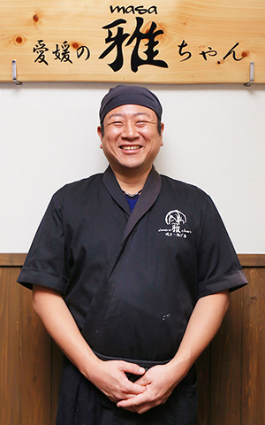

愛媛の雅ちゃん
雅ちゃんについて
最高の隠し味は おもてなし

ごあいさつ
神戸市にある専門学校を卒業し、そのまま全国転勤のある会社に就職。それから16年勤務していく中で、各地方への転勤地として、香川県丸亀市（おやひな）・愛知県名古屋市（手羽先）の骨付鳥と出会いました。父の体調不良を機に愛媛県に戻り、骨付鳥のお店の開業準備をし、四国中央市の揚げ足鳥を含む、3つの名物鳥料理のお店を松山市駅前商店街にて開業致しました。
オープン当時に南海放送様の『もぎたてテレビ』で放送された事もあり、たくさんのお客様と出会う事が出来ました。また、松山三越で不定期開催されている、『もぎたて名店街』のイベント業にも参加し、本業のお店と共に継続し、それから4年後の平成25年3月3日にお店を【株式会社 雅道】に法人化し、現在に至ります。
お店のコンセプトは、「松山市で各地方の名物鶏料理が食べられる」であり、その中でお客様に於いては、笑顔で来て頂き、笑顔でお帰り頂く事をモットーに元気良く接客させて頂いております。お食事だけを提供するお店では無く、ひとつひとつの出会いを大事にし、これからも日々精進していく所存であります。
お店のコンセプト
「松山市で各地方の名物鶏料理が食べられる」
最高の鶏料理を追い求めて１４年
皆様、一人一人に満足して頂けるように毎日精進しております。
おいしい鶏料理をご堪能ください。
会社概要
| 会社名 | Ehimeno雅Chan ～愛媛の雅（マサ）ちゃん～ |
|---|---|
| 法人名 | 株式会社 雅道（マサミチ） |
| 所在地 | 〒790-0012愛媛県松山市湊町5丁目4-2 健勝ビル2階 |
| TEL | 089-913-1194 |
| 代表者 | 土肥 雅樹 ／ Masaki Dohi |
| 取引銀行 | 伊予銀行 ／ 愛媛銀行 |
| 沿革 | 平成23年2月19日設立 平成27年3月3日法人化 |